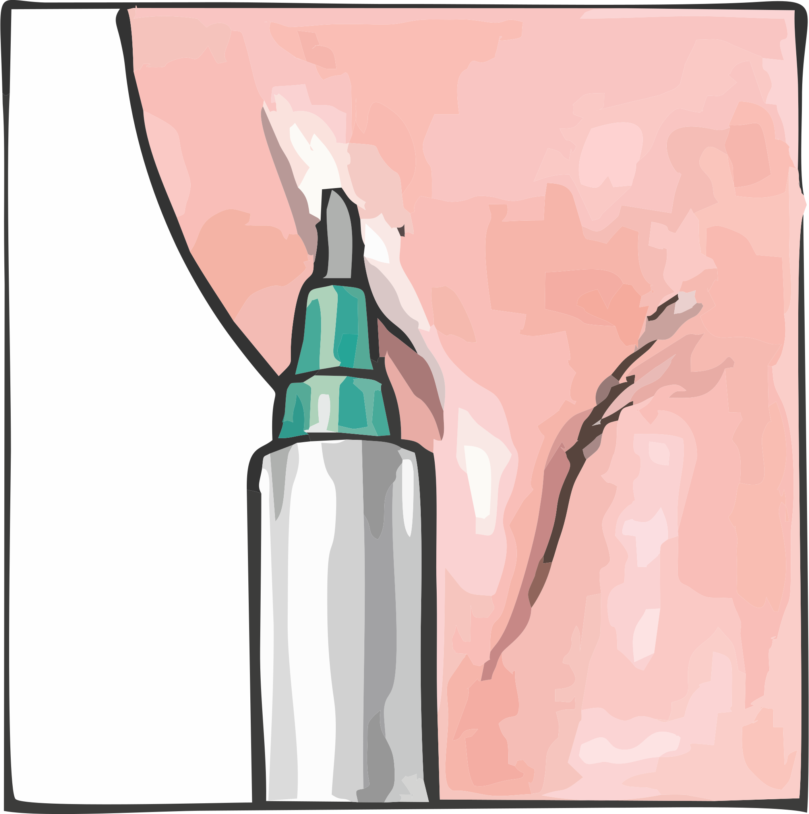
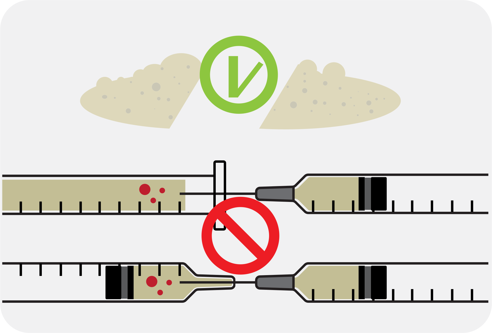

<!DOCTYPE html>
<!-- @uncristalero
https://www.youtube.com/channel/UCoJWdKkCSNcep54wDH5_wlQ/playlists
https://twitter.com/UnCristalero
https://eldiariodeuncristalero.github.io/
https://es.pornhub.com/users/uncristalero
 -->
<html lang="es-MX" dir="ltr" prefix="og: https://ogp.me/ns#">


<head>
    <meta charset="UTF-8">
    <title>Slamming Guía para la reducción de daños asociados al uso de las drogas inyectables</title>
    <link rel="canonical" href="https://eldiariodeuncristalero.github.io/guia.html">
    <link rel="icon" href="favicon-slamming.png" type="image/x-icon" sizes="192x192 " />
    <link rel="apple-touch-icon" href="/images/crico-152.png">
    <link rel="shortcut icon" href="favicon-slamming.png">
    <link rel="apple-touch-icon-precomposed" sizes="180x180" href="/gmail_2020q4_512dp.png">
    <link rel="icon" sizes="32x32" href="/gmail_2020q4_32dp.png">
    <link rel="icon" sizes="16x16" href="/gmail_2020q4_16dp.png">
    <link rel="icon" sizes="192x192" href="favicon-slamming.png" id="favicon" type="image/x-icon" />
    <link rel="preload" as="font">

    <meta http-equiv="content-encoding" content="gzip">
    <meta http-equiv="X-UA-Compatible" content="IE=edge">
    <meta http-equiv="Content-Type" content="text/html; charset=UTF-8">
    <meta http-equiv="Content-Language" content="es-mx">
    <meta http-equiv="X-UA-Compatible " content="IE=edge ">
    <meta http-equiv="Cache-Control" content="max-age=31536000  ">
    <meta http-equiv="x-dns-prefetch-control" content="on">
    <meta http-equiv="vary-header" content="Accept-Encoding">
    <meta http-equiv="Vary" content="Accept-Encoding" />

    <meta name="viewport" content="width=device-width, initial-scale=1.0">
    <meta name="theme-color" content="white" />
    <meta name="apple-mobile-web-app-capable" content="yes">
    <meta name="apple-mobile-web-app-status-bar-style" content="black">
    <meta name="apple-mobile-web-app-title" content="@uncristalero">
    <meta name="msapplication-TileImage" content="image/crico-144.png">
    <meta name="msapplication-TileColor" content="#002266">
    <meta name="referrer" content="no-referrer">

    <!-- Link, Facebook and Twitter integration -->

    <meta name="generator " content="@uncristalero ">
    <meta name="rights" content="®@uncristalero">
    <meta name="description" content="El slamming puede ser una experiencia placentera, euforizante y sexualmente estimulante que desinhibe la conducta sexual. Permite mantener sesiones de sexo más largas incrementando la confianza en uno mismo y la energía. Sin embargo, se trata de una práctica que no está exenta de riesgos">
    <meta name="keywords " content="slamming, meth, cristal, ice, tina">
    <meta name="robots " content="max-snippet:-1, max-image-preview:large, max-video-preview:-1 ">
    <meta name="googlebot" content="max-snippet:[0],max-image-preview:[standard]" />
    <meta name="author" content="@uncristalero">

    <meta name="rating" content="adult" />
    <meta name="rating" content="RTA-5042-1996-1400-1577-RTA" />

    <meta property="og:locale " content="es_MX ">
    <meta property="og:type " content="article ">
    <meta property="og:title " content=" Lo que me hubiera gustado conocer antes de haber probado el cris  ">
    <meta property='og:description' content='Lo que me hubiera gustado conocer antes de haber probado el cris '>
    <meta property="og:url " content=" ">
    <meta property="og:site_name " content="eldiariodeuncristalero">
    <meta property="og:image " content="eldiariodeuncristalero.github.io/img/crico.png" />
    <meta property="og:image:secure_url " content="eldiariodeuncristalero.github.io/img/crico.png " />
    <meta property="og:image:width " content="1080 " />
    <meta property="og:image:height " content="400 " />
    <meta property="og:image:alt" content="Lo que me hubiera gustado conocer antes de haber probado el cris" />
    <meta property="og:image:type" content="image/jpeg" />
    <meta property="twitter:card " content="summary ">
    <meta property="twitter:site " content="@eldiariodeuncristalero ">
    <meta property="twitter:domain " content="@eldiariodeuncristalero">

    <meta name="twitter:card " content="summary_large_image " />
    <meta name="twitter:title " content="@eldiariodeuncristalero " />
    <meta name="twitter:image " content="eldiariodeuncristalero.github.io/img/crico.png" />
    <meta name='twitter:description' content=' Lo que me hubiera gustado conocer antes de haber probado el cris '>

    <link rel="stylesheet" href="css/text.css">
    <link rel="stylesheet" href="https://cdnjs.cloudflare.com/ajax/libs/normalize/5.0.0/normalize.min.css">
    <link rel="stylesheet" href="css/home.css">
    <link rel="preconnect" href="https://fonts.gstatic.com" crossorigin>
    <link rel="stylesheet" href="https://fonts.googleapis.com/css?family=Google+Sans+Display|Google+Sans:400,500|Google+Sans+Text:400,500&amp;display=swap" nonce="uBU2WOdeBEmjrN3ipZG-8g">
    <link rel="stylesheet " href="css/tabset.css">
    <link rel="stylesheet " href="css/ctas.css">
    <link rel="stylesheet " href="css/faq.css ">

    <style>
        .img {
            max-width: 400px;
            width: 100%;
            height: auto;
        }
    </style>

    <script type="application/ld+json " nonce="uBU2WOdeBEmjrN3ipZG-8g ">
        {
            "@context ": "https://schema.org ",
            "@type ": "FAQPage ",
            "mainEntity ": [{
                        "@type ": "Question ",
                        "name ": "¿Qué debes evitar antes de realizar el slam de cristal? ",
                        "acceptedAnswer ": {
                            "@type ": "Answer ",
                            "text ": "Trata de evitar beber mucho café o fumar cigarrillos antes de inyectarte, ya que la cafeína y la nicotina estrechan las venas. Si, por el contrario, hidratas tu cuerpo bebiendo agua (o zumo de frutas o bebidas isotónicas), la sangre circulará por las venas más fácilmente haciendo que estas sean más grandes y visibles.
                            "}},{"
                            @type ":"
                            Question ",
                            "name ": "Cuánto tiempo hace efecto el slam de cristal en el músculo, vía intramuscular? ",
                            "acceptedAnswer ": {
                                "@type ": "Answer ",
                                "text ": " El músculo, vía intramuscular los efectos se producen en el plazo de 10-30 minutos tras la inyección. La inyección en el músculo comporta un alto riesgo de abscesos.
                                "}},{"
                                @type ":"
                                Question ",
                                "name ": "Cuánto tiempo hace efecto el slam de cristal en el músculo, vía intramuscular? ",
                                "acceptedAnswer ": {
                                    "@type ": "Answer ",
                                    "text ": "Bajo la piel, vía subcutánea, Consiste en la inyección de drogas en la capa de grasa que hay bajo la piel. La droga se va liberando lentamente al torrente sanguíneo. Es la vía de administración más lenta de las tres. Para este tipo de administración se requieren jeringuillas y agujas lo más finas posibles. La inyección bajo la piel puede producir fácilmente abscesos.
                                    "}
                                }]
                        }
    </script>
    <script src="js/lazysizes.min.js " rel="preload " as="script " async></script>
</head>
</head>

<body>

    <!-- partial:index.partial.html -->
    <div id="content">
        <article id="sf">

            <picture>
                <center></center>
            </picture>
            </picture>


            <h1>Slamming Guía para la reducción de daños asociados al uso de las drogas inyectables</h1>

            <p><b>Edición</b> J. Sebastián Hernández, Grupo de Trabajo sobre Tratamientos del VIH (gTt-VIH)</p>
            <p><b>Ilustración</b> Tony Saldaña</p>
            <p><b>Contenidos</b> En la elaboración de los contenidos de esta guía se han utilizado los siguientes recursos: Preston A, Jones R, Linnell M. Slamming. Exchange Supplies. Mainline. 2017 / Knoops L, Bakker I, Bodegom R van, Zantkuijl P. Tina
                & slamming: MSM, crystal meth and intravenous drug use in a sexual setting. Amsterdam, Mainline, Soa Aids Netherlands, 2015 / Hernández JS. ChemSex y Hepatitis C: Guía para profesionales sanitarios. Grupo de Trabajo sobre Tratamientos
                del VIH. Barcelona, 2017 / Colom J (coord.). Manual d’injecció higiènica per a professionals. Departament de Sanitat i Seguretat Social. Generalitat de Catalunya. Barcelona, 2002 / Pla funcional del programa d’intercanvi de xeringues a
                les farmàcies comunitàries. Agència de Sal</p>
            <p><b>Sobre gTt-VIH</b> El Grupo de Trabajo sobre Tratamientos del VIH (gTt-VIH) es una organización no gubernamental con sede en Barcelona y Madrid (España) y declarada Entidad de Utilidad Pública. Para más información: <a href="https://infodrogas-vih.org/"
                    target="_blank ">www.gtt-vih.org</a></p>
            <p><b>Descargo de responsabilidad </b>Esta guía va dirigida a personas mayores de 18 años. Algunas imágenes explícitas podrían herir la sensibilidad de algunas personas. El Grupo de Trabajo sobre Tratamientos del VIH aborda el consumo de drogas
                con fines sexuales desde una perspectiva de salud integral, bienestar y reducción de riesgos y daños. La información contenida en esta guía no pretende sustituir la recibida por un profesional de la salud. Las decisiones referentes a la
                salud siempre deberían tomarse tras consultar con los profesionales sanitarios. Si eres un profesional sanitario o comunitario, distribuye esta guía solo a aquellas personas a las que el contenido pueda resultarles útil para el manejo
                de la salud.</p>
        </article>
        <article id="nyc">
            <h1>INTRODUCCIÓN</h1>
            <p>La inyección de drogas –también conocida como <span class="blue-text">slam o slamming</span>– es una práctica de consumo entre algunos hombres gais, bisexuales y otros hombres que practican sexo con hombres (GBHSH).</p>
            <p>Algunas drogas como la metanfetamina (tina), la mefedrona (mefe), la ketamina (keta), la cocaína, el MDMA, el speed y algunas otras nuevas sustancias (conocidas como Research Chemicals) pueden ser consumidas por vía inyectada antes y/o durante
                las sesiones de sexo.</p>
            <p><span class="blue-text">El slamming puede ser una experiencia placentera, euforizante y sexualmente estimulante que desinhibe la conducta sexual. Permite mantener sesiones de sexo más largas incrementando la confianza en uno mismo y la energía. <span>Sin embargo, se trata de una práctica que no está exenta de riesgos. Algunos de estos riesgos se relacionan con el tipo de drogas utilizadas y el patrón de uso; otros, sin embargo, se relacionan con el modo en que se realiza la inyección.</p>
            <p>Si consumes sustancias por vía inyectada, o crees que podrías hacerlo en un futuro, es importante que aprendas cómo hacerlo de forma segura. <span class="blue-text">Esta guía contiene información que te permitirá reducir los riesgos.</span>                Podrás encontrar información sobre la técnica para inyectarse drogas de manera más segura. También te proporcionamos consejos sobre qué instrumentos deberías utilizar para la inyección de drogas, dónde adquirirlos o cómo mantener un buen
                cuidado de las venas para evitar que se produzcan daños en ellas. </p>
            <p>Te explicamos también qué puedes hacer para <span class="blue-text">mantener una buena salud sexual y mental <span>mientras consumes drogas en entornos sexuales y <span class="blue-text">qué puedes hacer en caso de sobredosis.<span> Por último, se incluyen detalles de dónde puedes conseguir más información</p>
            <ol>
                <li class="blue-text">SUMARIO </li>
                <li>ANTES DE EMPEZAR</li>
                <li>LA INYECCIÓN DE DROGAS PASO A PASO </li>
                <li>EL EQUIPO DE INYECCIÓN</li>
                <li>MANTENERSE SALUDABLE: SALUD SEXUAL y SALUD MENTAL</li>
            </ol>
        </article>
        <article id="dc">
            <h1>ANTES DE EMPEZAR</h1>
            <p>Algunos consejos antes de empezar tu sesión de <span class="blue-text">chemsex o slamsex:<span> </p>
            <p><b>1. Conoce a tu dealer:</b> Es aconsejable elegir un dealer de drogas que te ofrezca confianza, que tenga experiencia y que conozca bien las drogas que vende. </p>
            <p><b>2. Establece reglas de seguridad:</b> Es probable que en la sesión de sexo haya más hombres. Puede ser de gran utilidad establecer entre todos los participantes reglas de seguridad antes de empezar la sesión sobre qué hacer o dónde llamar
                en caso de sobredosis o problemas con las drogas. Trata de no inyectarte solo.</p>
            <p><b>3. Haz acopio de material:</b> Las sesiones pueden ser largas. Te resultará útil reunir previamente todo el material que puedas necesitar para que no te quedes sin él: kits de inyección segura, preservativos, lubricantes, guantes de látex,
                etc. </p>
            <p><b>4. Lleva contigo la medicación: </b>Si estás tomando medicación para alguna enfermedad, como el VIH, la hepatitis C o la profilaxis prexposición (PrEP) fernte al VIH, lleva contigo los medicamentos necesarios para que no te quedes sin ellos
                el tiempo que dure la sesión. Acuérdate de tomar la medicación a su hora tal como ha sido prescrita. Recuerda que algunas drogas presentan interacciones con los medicamentos del VIH y la hepatitis C. Puedes hablar de este tema con tu médico.</p>
            <p><b>5. Pide ayuda: </b></b>En caso de que surjan problemas graves durante la sesión de sexo derivados del uso de drogas, llama inmediatamente al 911 pidiendo ayuda</p>
            <p>En la siguiente tabla te resumimos algunas de las drogas utilizadas en espacios de ocio y/o sexuales que pueden ser administradas por vía inyectada:</p>
            <p><b>MMC </b>Estimulación, euforia, sentimiento de empatía. Incrementa el deseo sexual. <i>Nasal, rectal, intravenosa</i></p>
            <p><b>MEC </b>Estimulación, euforia, sentimiento de empatía. Incrementa el deseo sexual. <i>Nasal, rectal, intravenosa</i></p>
            <p><b>FMP </b>Estimulante de tipo anfetamínico. Euforia y aumento de la energía. <i>Oral, nasal, rectal, intravenosa </i></p>
            <p><b>Anfetamina (‘speed’) </b>Efecto estimulante, de activación y bienestar. Incrementa el deseo sexual. <i></i></p>
            <p><b>Cocaína (‘coca’, ‘farla’)</b> Estimulación, euforia, exaltación del estado de ánimo. Incrementa el deseo sexual.  <i>Nasal, fumada, Nasal, fumada</i></p>
            <p><b>GHB/GHL (‘G’) </b> Eforia, desinhibición, locuacidad, relajación. Incrementa el deseo sexual.  <i>Oral, nasal, rectal, intravenosa (poco habitual)</i></p>
            <p><b>Ketamina (‘keta’)</b> Estimulación inicial, relajación, empatía, mejora de la percepción, disociación. <i>Nasal, intravenosa, intramuscular, rectal</i></p>
            <p><b>Mefredona (‘mefe’</b> Estimulación, euforia, sentimiento de empatía. Incrementa el deseo sexual. <i>Oral, nasal, rectal, intravenosa </i></p>
            <p><b>Metanfetamina (‘tina’)</b> Estimulación, desinhibición, activación y bienestar. Incrementa el deseo sexual. <i>Nasal, oral, rectal, fumada, intravenosa</i></p>
            <p><b>Metoxetamina (‘MXE’)</b> Ligera sedación; un poco de empatía;euforia y estimulación; introspección psicodélica (a dosis altas).  <i>Sublingual, nasal, rectal, intravenosa, intramuscular</i></p>
            <p><b>MDMA (éxtasis; ‘rulas’, ‘pastis’, ‘M’)</b>  Estimulación, sentimiento de empatía, aceptación y conexión. <i>Oral, nasal (en ocasiones), intravenosa (poco habitual)</i></p>
        </article>


        <article id="philly">
            <h1>DÓNDE INYECTARSE</h1>
            <p>Las drogas que se utilizan normalmente en las sesiones de sexo 
                se inyectan en la vena (vía intravenosa). Los efectos de la droga 
                a través de esta vía de administración son inmediatos. Es importante prestar mucha atención para evitar inyectarse en las 
                arterias y los capilares. El único tipo de vaso sanguíneo donde es 
                adecuado inyectarse es la vena. Las venas superficiales se 
                distinguen en la piel por su color azulado.</p>        
            <p>Si, por error, te inyectas en una arteria, notarás dolor; verás que la 
                sangre es de color rojo brillante y de aspecto espumoso y es 
                posible que el émbolo de la jeringuilla se retire espontáneamente 
                por causa de la presión de la sangre. Si esto sucede, interrumpe 
                el proceso, ya que podría provocar infecciones graves o abscesos, y ejerce presión sobre el punto de inyección durante, como 
                mínimo, 15 minutos, mientras mantienes el brazo en alto. Si el 
                sangrado no se detiene, llama al servicio de emergencias con 
                rapidez (teléfono 911). </p>
            <p>Las mejores venas estarán, probablemente, en el brazo y la mano 
                que más se utiliza. Para hacer que las venas sean más visibles y 
                fáciles de encontrar, puedes extender y abrir y cerrar la mano de 
                forma alternativa durante unos segundos para que la sangre 
                fluya hacia las venas. También se puede poner en agua caliente 
                la parte donde se hará la inyección, dar pequeñas palmadas a la 
                piel que hay sobre la vena o dejar que el brazo cuelgue y se llene 
                de sangre.</p>            
            <p>Trata de evitar beber mucho café o fumar cigarrillos antes de 
                inyectarte, ya que la cafeína y la nicotina estrechan las venas. Si, 
                por el contrario, hidratas tu cuerpo bebiendo agua (o zumo de 
                frutas o bebidas isotónicas), la sangre circulará por las venas 
                más fácilmente haciendo que estas sean más grandes y visibles. </p>
                <p><b>Consejos</b></p>
                <p>-Alterna los puntos de inyección. Esto permitirá que tanto la 
                    piel como las venas se recuperen y se mantengan en buenas 
                    condiciones.</p>
                <p>-La parte inferior de los brazos y de las piernas son los puntos 
                        más fáciles y seguros para inyectarse.</p>
                <p>-Las venas de las manos y los pies son pequeñas y vulnerables. Inyectarte en esos puntos puede ser doloroso y entraña 
                        un riesgo elevado de provocar daños en las venas.</p>
                <p>-Las venas que entrañan menos riesgo son las del antebrazo. 
                        Se pueden utilizar en toda su longitud, desde la muñeca 
                        hasta la parte interior del codo.</p>
                <p>-El cuello, el pene y las ingles son zonas muy peligrosas: 
                        inyectarse en estos sitios podría acarrear daños graves</p>
                <p><b>Además de la intravenosa, existen otras vías de inyección, </b>
                    aunque conviene recordar que no son aconsejables para la 
                    administración de la metanfetamina y la mefedrona. Estas vías 
                    son:</p>
                <p><b class="blue-text">El músculo (vía intramuscular):</b> Los efectos se producen en
                    el plazo de 10-30 minutos tras la inyección. La inyección en el 
                    músculo comporta un alto riesgo de abscesos. </p>
                <p><b class="blue-text">Bajo la piel (vía subcutánea): </b> Consiste en la inyección de 
                    drogas en la capa de grasa que hay bajo la piel. La droga se va 
                    liberando lentamente al torrente sanguíneo. Es la vía de 
                    administración más lenta de las tres. Para este tipo de administración se requieren jeringuillas y agujas lo más finas posibles. 
                    La inyección bajo la piel puede producir fácilmente abscesos.</p>
                <p><b class="blue-text">El recto (vía rectal):</b>  Las drogas se introducen en el recto con 
                    una jeringuilla sin aguja. Conviene utilizar lubricante en la 
                    jeringuilla para evitar lesiones en el canal anal. La mucosa rectal 
                    absorbe las sustancias rápidamente y de manera importante.</p>
                    <picture><center></center></picture>
              
                <p class="border"><b class="blue-text" >Absceso:</b> Es una infección e inflamación en el punto de 
                    inyección que se manifiesta a través de la acumulación de pus 
                    bajo la piel y del enrojecimiento, hinchazón y aumento de la 
                    temperatura de la zona afectada. Aparece cuando, por error, se 
                    inyecta en los tejidos que rodean las venas; cuando se inyectan 
                    soluciones con muchas partículas poco disueltas; por no limpiar 
                    el lugar de inyección antes de pincharse o por utilizar material no 
                    esterilizado. Si crees que tienes un absceso, consulta con tu 
                    médico, ya que probablemente necesitarás tratamiento con 
                    antibióticos o un drenaje. Si desarrollas fiebre, escalofríos, 
                    cansancio extremo y dolor en el lugar donde está el absceso, 
                    dirígete inmediatamente a un centro sanitario puesto que 
                    podrías tener una infección en la sangre.</p>
            
                <p>La vía de administración determina el porcentaje de drogas que 
                    finalmente llega al torrente sanguíneo. Una cantidad relativamente grande de las drogas se pierde cuando se tragan (vía oral) 
                    o se esnifan (vía intranasal), es decir, no se absorbe ni llega a la 
                    sangre toda la cantidad de droga consumida.</p>
                <p>El efecto real depende de la cantidad de la dosis y otros factores 
                    tales como la tolerancia a la droga consumida. <b>En la siguiente 
                    tabla se muestra la cantidad de fármaco que es absorbido por 
                    el organismo cuando se toma una dosis de metanfetamina 
                    según la vía de administración.</b> </p>
                    <div style="overflow-x: auto;">
                    <table >
                        <tr>
                          <th>Vía de administración </th>
                          <th>Cantidad de metanfetamina absorbida</th>
                        </tr>
                        <tr>
                          <td>Oral (tragada)</td>
                          <td>62.7%</td>   
                        </tr>
                        <tr>
                         <td>Intranasal (esnifada)</td>
                        <td>79%</td>
                           </tr>
                           <tr>
                          <td>Fumada</td>
                            <td>90.3%</td>
                            </tr>
                        </tr>
                         <tr>
                          <td>Rectal (jeringuilla sin aguja) </td>
                             <td>99%</td>
                             </tr>
                             <tr>
                          <td>Intravenosa</td>
                              <td>100%</td>
                          </tr>                                                                   
                        </tr>                                           
                    </table>
                    </div>
                <p><b>En la siguiente tabla podrás comprobar los efectos de la 
                        metanfetamina según la dosis y la vía de administración.</b> Las 
                        dosis se basan en los efectos de la metanfetamina no adulterada 
                        en personas que no han desarrollado tolerancia al fármaco.</p>
                        <div style="overflow-x: auto;">
                        <table>
                            <tr>
                              <th>Dosis</th>
                              <th>Oral</th>
                              <th>Intranasal</th>
                              <th>Fumada/Vaporizada</th>
                              <th>Inyectada</th>
                            </tr>
                            <tr>
                              <td><b>Baja</b></td>
                              <td>5-15mg</td>
                              <td>5-15mg</td>
                              <td>10-20mg</td>
                              <td>5-10mg</td>    
                            </tr>
                            <tr>
                           <td><b>Estándar</b></td>
                              <td>10-30mg</td>
                              <td>10-40mg</td>
                              <td>10-40mg</td>
                              <td>10-40mg</td>
                            </tr>
                            <tr>
                          <td><b>Fuerte</b></td>
                              <td>20-60mg</td>
                              <td>30-60mg</td>
                              <td>30-60mg</td>
                              <td>30-60mg</td>
                            </tr>
                            <tr>
                              <td><b>Muy Fuerte</b></td>
                              <td>20-60mg</td>
                              <td>+50mg</td>
                              <td>+50mg</td>
                              <td>50-100mg</td> 
                          </tr>
                        </table>
                        </div >
                <p class="nota">Nota: La información contenida en esta tabla es orientativa. No son recomendaciones de dosificación. </p>
                <p>La aparición y la duración de los efectos dependen del tamaño de 
                    la dosis y la vía de administración. En la siguiente tabla se 
                    resume la duración del efecto de la metanfetamina en personas que no han desarrollado tolerancia.</p>
                    <div style="overflow-x: auto;">
                        <table>
                        <tr>
                          <th>Duración</th>
                          <th>Oral</th>
                          <th>Intranasal</th>
                          <th>Fumada/Vaporizada</th>
                          <th>Inyectada</th>
                        </tr>
                        <tr>
                          <td><b>Aparicion</b></td>
                          <td>20-70 min</td>
                          <td>5-10 min</td>
                          <td>0-2 min</td>
                          <td>0-2 min</td>   
                        </tr>
                        <tr>
                       <td><b>Duración</b></td>
                          <td>3-5 h</td>
                          <td>2-4 h</td>
                          <td>1-3 h</td>
                          <td>4-8 h</td>
                        </tr>
                        <tr>
                      <td><b>Fuerte</b></td>
                          <td>20-60mg</td>
                          <td>30-60mg</td>
                          <td>30-60mg</td>
                          <td>30-60mg</td>
                        </tr>
                        <tr>
                          <td><b>Bajada</b></td>
                          <td>2-6 h</td>
                          <td>2-6 h</td>
                          <td>2-4 h</td>
                          <td>2-4 h</td>
                      </tr>
                        <tr>
                          <td><b>Efecto residual</b></td>
                          <td>Hasta 24 h </td>
                          <td>Hasta 24 h </td>
                          <td>Hasta 24 h </td>
                          <td>Hasta 24 h </td>
                      </tr>
                      </table>
                    </div >
                <p>Por lo que respecta a la <b>mefredona,</b> la dosis habitual consumida 
                    durante una sesión es de 0,5-1 g, generalmente administrada en 
                    dosis cada 1 o 2 horas. La mefedrona produce tolerancia con 
                    rapidez y es necesario incrementar la dosis para conseguir los 
                    mismos efectos. La corta duración de los efectos (sobre todo 
                    por vía intranasal o intravenosa) lleva a algunas personas tomar 
                    dosis sucesivas de forma compulsiva. Por ejemplo, las personas 
                    que se inyectan mefedrona a veces usan 0,5 g o más en una 
                    dosis y, como consecuencia de la tolerancia, pueden llegar a 
                    inyectarse incluso hasta 10 veces al día. </p>
                    <picture><center></center></picture>
                <p class="nota">Nota: La información contenida en esta tabla es orientativa. No son
                    recomendaciones de dosificación.</p>
                <p class="border"><b class="blue-text">Tolerancia:</b> Se produce cuando se consume una droga de forma 
                    continuada y el organismo se habitúa a ella. Como consecuencia de ello, la persona necesita aumentar la dosis o la frecuencia 
                    o la vía de administración para conseguir los mismos efectos.</p>
              
                
        </article>
        <article id="la">
            <h1>La Inyección de drogas paso a paso</h1>
            <p>Seguir una técnica de inyección apropiada prolongará la vida de 
                tus venas. Si no lo haces así, podría producirse el colapso de la 
                vena, lo que puede implicar un daño permanente.</p>
            <p><b>Algunos consejos generales que conviene
                tener siempre en cuenta:</b></p>
            <p>-Tómate tu tiempo y sé cuidadoso</p>
            <p>-Asegúrate de que el espacio o habitación donde te vas a 
                inyectar está limpio y ordenado. Esto te ayudará a mantener 
                tus instrumentos de inyección limpios y reducirás las posibi- 
                lidades de confundir tus instrumentos con los de tus 
                colegas.</p>
            <p>Dale tiempo a tus venas para que se recuperen.
                Inyéctate, al menos, a un centímetro de distancia del último 
                punto de inyección</p>
            <p>La inyección debe ir siempre en dirección de la corriente 
                sanguínea hacia el corazón y el bisel de la aguja mirando 
                hacia arriba</p>
            <p>Asegúrate de utilizar siempre material de inyección nuevo y 
                estéril, cambiar todo el material para cada consumo y no 
                compartirlo</p>
            <p class="border"><b class="blue-text">Colapso venoso:</b> Se produce cuando la vena se cierra como 
                consecuencia de las inyecciones repetidas en un mismo 
                punto, de las infecciones frecuentes de la vena o de las 
                lesiones de la vena y de los tejidos que la rodean. La vitamina 
                C tomada por vía oral (nunca inyectada) puede servir para 
                ayudar a que las venas se recupere de las lesiones y para reducir las hemorragias y los hematomas</p>
           <picture><center></center></picture>
           <p><span class="blue-text">Paso 1</span> <b>Es muy importante lavarse las manos con 
            agua y jabón o, si no es posible, con una 
            toallita impregnada con alcohol.</b> Hacer algo tan sencillo como esto disminuye muchísimo el riesgo de infecciones. También es importante lavar la zona de la piel donde te pincharás antes y después de la inyección.</p>
            <picture>
                <center></center>
            </picture>
            <p><span class="blue-text">Paso 2</span> <b>Debes disolver la droga en agua estéril y en 
                un recipiente también estéril.</b></p>
            <p><b>Si tienes que aplicar calor, se tiene que 
                calentar el mínimo tiempo posible y dejarlo 
                enfriar.</b> No debería hervir, ya que esto puede hacer que la disolución se espese al enfriarse</p>
            <p><b>Tampoco se puede inyectar cuando todavía 
                está muy caliente:</b>demás de doloroso, puede quemar las paredes de las venas.</p>
            <p><b>Deberías utilizar un filtro para llevar la 
                disolución a la jeringuilla. </b> Compartir el filtro supone también un riesgo de transmisión del VIH, el VHB y el VHC.</p>
            <picture>
                <center></center>
            </picture>
            <p><span class="blue-text">Paso 3</span> <b>Una vez cargada, sostén la jeringuilla con la 
                aguja apuntando hacia arriba y empuja el 
                émbolo ligeramente hasta que una pequeña 
                gota del líquido salga por el extremo de la 
                jeringuilla para asegurar que no hay burbujas 
                dentro.</b></p>
            <p>No lamas la punta de la aguja, ya que la boca y la saliva contienen muchos gérmenes que pueden causar infecciones, hinchazón y abscesos en el punto de la inyección.</p>
            <picture>
                <center></center>
            </picture>
            <p><span class="blue-text">Paso 4</span> <b>Es aconsejable que busques una vena en la 
                que no te hayas inyectado recientemente</b> y dejes unos dos centímetros de distancia con la siguiente inyección.</p>
            <p><b>Asegúrate de tener una postura estable </b> y de que podrás permanecer quieto mientras te inyectas.
            </p>
            <p><b>Utiliza un torniquete únicamente si no eres 
                    capaz de encontrar una vena.</b> Si el torniquete está ceñido, no dejará pasar la sangre y no se llenará la vena.</p>
            <picture>
                <center></center>
            </picture>
            <p><span class="blue-text">Paso 5</span> <b>Limpia el punto de inyección con agua y jabón 
                o con una toallita impregnada de alcohol</b> dejando que este se evapore, ya que, si no, podrían quemarse las venas</p>
            <p>dejando que este se evapore, ya que, si no, podrían quemarse las venas</p>
            <p>Procura no tocar la piel después de haberla limpiado.
            </p>
            <picture>
                <center></center>
            </picture>
            <p><span class="blue-text">Paso 6</span> <b>El ángulo correcto para la inyección es de 
                30 a 45 grados respecto a la superficie de la 
                piel y con el bisel de la aguja hacia arriba
               .</b> (en dirección contraria a la piel)</p>
            <p>La inyección tiene que ir en la dirección de la corriente sanguínea hacia el corazón</p>
            <p>Cuando creas que la aguja ya está en la vena, retira un poco hacia atrás el émbolo para comprobarlo. Si no sale algo de sangre, saca un poco la aguja hacia atrás e inténtalo de nuevo.
            </p>
            <p>Es importante que consigas acertar en la vena haciendo un solo pinchazo.</p>
            <picture>
                <center></center>
            </picture>
            <picture>
                <center></center>
            </picture>
            <p><span class="blue-text">Paso 7</span> <b>Una vez que la aguja esté en la vena, 
                retira el torniquete .</b> (si lo has utilizado) para evitar ejercer una presión innecesaria sobre las venas</p>
            <p><b>Nunca realices la inyección cuando el 
                torniquete está apretado.</b></p>
            <picture>
                <center></center>
            </picture>
            <p><span class="blue-text">Paso 8</span> <b>Empuja el émbolo lentamente y con cuidado 
                de no mover la jeringuilla. </b></p>
            <p><b>Cuando termines, retira cuidadosamente la 
                aguja. </b> Si se hace muy deprisa puede colapsarse la vena.</p>
            <picture>
                <center></center>
            </picture>
            <p><span class="blue-text">Paso 9</span> <b>Mantén presionado con una gasa o algodón 
                limpios el punto de inyección hasta que deje 
                de sangrar</b> (entre 2 y 3 minutos) para evitar la formación de hematomas</p>
            <p>Si sangra o se produce un hematoma, será más difícil encontrar la vena la próxima vez.</p>
            <p><b>Después, limpia de nuevo el punto de 
                inyección con una toallita con alcohol</b> La manera correcta es de forma circular, comenzando por el punto de inyección y haciendo una espiral hacia fuera.</p>
            <picture>
                <center></center>
            </picture>
            <p><span class="blue-text">Paso 9</span> Lanza todos los utensilios de inyección en un lugar seguro donde nadie pueda utilizarlos ni herirse al manipularlos.</p>
            <p>Algunas farmacias, centros de reducción de daños y centros de atención a las drogode - pendencias participan en programas de intercambio de jeringuillas y disponen de contenedores especiales de plástico rígido donde puedes depositar el material
                utilizado.
            </p>
            <p>Si no puedes depositar el equipo de inyección en un contenedor especial, una opción es desprenderse de él de forma segura, por ejemplo, introduciendo la jeringuilla con la aguja en una lata de bebida o en un tetrabrik.</p>
        </article>

        <article id="el-equipo">
            <h1>DEL EQUIPO DE INYECCIÓN</h1>
            <picture>
                <center></center>
            </picture>
            <p>odo el material utilizado para la inyección de drogas es potencialmente contagioso. A través de la inyección de drogas se pueden adquirir infecciones transmitidas por compartir los utensilios para la inyección (como el VIH, la hepatitis B
                y la hepatitis C) e infecciones producidas por la suciedad y la falta de higiene.
            </p>
            <p><b>Recuerda:</b></p>
            <p>-Es importante utilizar siempre un equipo nuevo de inyección para cada consumo.</p>
            <p>-Si vas a compartir drogas, lo mejor es repartirlas antes entre tus colegas de la sesión y que cada uno se las prepare e inyecte con su propio equipo.</p>
            <p>-La aguja tiene que estar siempre lo más limpia posible y no debería tocar nada. Si tienes que apoyar la jeringuilla en algún lugar, ponle antes el capuchón. </p>
            <p>-En el caso de tener que reutilizar la aguja y la jeringuilla, se tienen que limpiar con agua fría cuanto antes después de utilizarlas. Esto permitirá eliminar más fácilmente la sangre</p>
            <p>Se pueden comprar agujas y jeringuillas nuevas a precios económicos en muchas farmacias. En algunas ciudades, existen programas de intercambios de jeringuillas (PIJ) en farmacias, centros de reducción de riesgos y centros de atención a las
                drogodependencias que te proporcionarán de manera gratuita kits de inyección segura.<b> El kit de inyección segura incluye: 
                    jeringuilla y aguja estériles; ampolla de agua estéril; toallitas 
                    de alcohol; cazoleta; y filtro</b> </p>
            <picture>
                <center></center>
            </picture>
            <h2>AGUJAS Y JERINGUILLAS</h2>
            <p>La aguja tiene que ser lo más pequeña y fina posible, ya que daña menos a la vena y hace más fácil su recuperación. No obstante, la elección dependerá de la sustancia a consumir y del lugar del cuerpo destinado a la inyección</p>
            <p>Las agujas se presentan de diferentes colores que determinan el grosor y la longitud. Los kits de inyección segura de algunos programas de intercambio de jeringuillas suelen ofrecer dos opciones de jeringuillas</p>
            <div style="overflow-x: auto;">

                <table>
                    <tr>
                        <th>Tipo de jeringa</th>
                        <th>Calibre</th>
                        <th>Capacidad</th>
                        <th>Medida de aguja</th>
                        <th>Tipo de la jeringa</th>
                    </tr>
                    <tr>
                        <td>
                            <b>Americana tipo insulina</b></td>
                        <td>0.4 mm</td>
                        <td>1 ml</td>
                        <td>12 mm</td>
                        <td>Aguja incorporada</td>
                    </tr>
                    <tr>
                        <td><b>Española tipo tuberculina</b></td>
                        <td>0.5 mm</td>
                        <td>1 ml</td>
                        <td>16 mm</td>
                        <td>Aguja separable</td>
                </table>

            </div>
            <picture>
                <center></center>
            </picture>
            <p>Por lo general, las jeringuillas americanas (de tipo insulina) con agujas más cortas son más aconsejables, ya que dañan menos el tejido cutáneo y subcutáneo y las venas. Además, la aguja de las jeringuillas americanas deja menos señales en
                la piel. No obstante, el hecho de que la aguja sea menos estrecha puede producir obturaciones con más facilidad, por ejemplo, cuando no se diluye correctamente la droga con el agua estéril. Si la aguja se daña (se ensucia, se despunta,
                o se tapona), será necesario cambiar la dosis a otra jeringuilla nueva; asegúrate de que el cambio se hace con cuidado para reducir el riesgo de infecciones.</p>
            <p>En el caso de compartir drogas, es preferible repartirlas antes entre tus colegas de la sesión y que cada uno se las prepare e inyecte con su propio equipo. Cargar la jeringuilla desde una que no sea estéril, tanto por delante como por detrás,
                comporta riesgos parecidos a los que se derivan de compartir la jeringuilla.</p>
            <picture>
                <center></center>
            </picture>
            <p>Asegúrate de tener siempre suficiente material de inyección disponible para todo el tiempo que dure la sesión. Utiliza siempre una jeringuilla y aguja estériles para cada inyección. Si te quedas sin ellas y no tienes más remedio que reutilizar
                la jeringuilla, deberías limpiarla cuidadosamente y con calma. <b>Entre los diferentes métodos de limpieza, el más rápido y económico es el uso de lejía normal:</b></p>
            <p>-Llena la jeringuilla, a través de la aguja, con aguja fría y después vacíala. Repítelo dos veces.</p>
            <p>-Llena la jeringuilla, a través de la aguja, con lejía; añade un poco de aire y remuévela durante 30 segundos. Después vacíala. Repítelo dos veces.</p>
            <p>-Vuelve a llenar la jeringuilla con agua fría y después vuelve a vaciarla. Repítelo dos veces.</p>
            <p>Vuelve a llenar la jeringuilla con agua fría y después vuelve a vaciarla. Repítelo dos veces.</p>
            <h2>AGUA ESTÉRiIL</h2>
            <p>El agua ha de ser estéril (de farmacia) y, en caso de que no pueda ser, al menos que sea destilada, y si no, hervida. El agua fría es más limpia que la caliente y la corriente, más que la estancada. Conviene saber que el agua destilada que
                se compra en las tiendas no es estéril. Por seguridad, lo mejor es que se utilicen las ampollas de agua bidestilada para la inyección, que se pueden comprar en farmacias o conseguir gratis en un programa de intercambio de jeringuillas.</p>
            <H2>CAZOLETA CON MANGO</H2>
            <p>Muchas personas usan como recipiente para mezclar la droga con el agua destilada la parte posterior de una lata de refresco (que es amplia y cóncava) o una cuchara. Si este es el caso, es necesario desinfectarlas antes muy bien
            </p>
            <p>La mejor opción para realizar la mezcla es utilizar una cazoleta con mango: puedes conseguirla de forma gratuita en los programas de intercambio de jeringuillas. Recuerda que el VIH, el VHB y el VHC se pueden transmitir fácilmente cuando se
                comparten cazoletas y filtros. Si necesitas reutilizar la cazoleta, deberías desinfectarla antes en agua hirviendo durante 15-20 minutos</p>
            <picture>
                <center></center>
            </picture>
            <H2>FILTROS</H2>
            <p>Los filtros evitan que las partículas de la droga que no se hayan disuelto en el agua entren en la jeringuilla. En ocasiones, como filtros, se pueden utilizar los de los cigarrillos nuevos. Si se emplean los filtros de los cigarrillos, conviene
                no arrancarlos con la boca, ni hacer bolitas con los dedos, ya que podrían impregnarse de gérmenes. </p>
            <p>Usa un nuevo filtro para cada inyección; la reutilización de filtros puede causar abscesos y otras infecciones. Recuerda que el VIH, el VHB y el VHC se pueden transmitir fácilmente cuando se comparten cazoletas y filtros</p>
            <p>La mejor opción es conseguir de manera gratuita los filtros en los programas de intercambio de jeringuillas.</p>
            <H2>TOALLITAS DE ALCOHOL</H2>
            <p>Las toallitas impregnadas de alcohol de un solo uso se utilizan para limpiar la piel antes y después de la punción. Tienen un efecto protector significativo contra la formación de abscesos y otras infecciones bacterianas. Puedes conseguirlas
                de manera gratuita en los programas de intercambio de jeringuillas. </p>
            <p>Las toallitas impregnadas de alcohol de un solo uso se utilizan para limpiar la piel antes y después de la punción. Tienen un efecto protector significativo contra la formación de abscesos y otras infecciones bacterianas. Puedes conseguirlas
                de manera gratuita en los programas de intercambio de jeringuillas. </p>
            <h2>TORNIQUETE</h2>
            <p>Se puede usar un torniquete cuando no se puede encontrar la vena. Como torniquete, se puede utilizar una goma o un cinturón elástico. Si no dispones, también puedes emplear un preservativo lubricado o cualquier otro utensilio que puedas desatar
                sin problemas. </p>
            <p>Para ponerte el torniquete, te lo tienes que colocar alrededor del brazo y apretar el puño varias veces. Recuerda que es necesario retirar el torniquete –sin que se suelte la jeringuilla– antes de empezar a introducir la droga en la vena.
            </p>
        </article>

        <article id="mantenerse-saludable-sexual">
            <h1>MANTENERSE SALUDABLE: SALUD SEXUAL </h1>
            <p>Las sesiones implican a menudo muchas horas e incluso días de actividad sexual bajo los efectos de las drogas. En ocasiones, estos efectos –sobre todo el efecto de desinhibición sexual– pueden hacerte bajar la guardia y asumir determinadas
                conductas que implican un mayor riesgo, como, por ejemplo, realizar sexo sin preservativo con varios hombres al mismo tiempo y/o prácticas sexuales más extremas y traumáticas sin apenas sentir dolor. </p>
            <p>Por lo tanto, no se trata únicamente de inyectarte para pasártelo bien practicando sexo con tus colegas: hay otras cosas que puedes hacer para mantenerte saludable y proteger tu salud y la de los demás</p>
            <p>En el siguiente apartado te ofrecemos algunos consejos que pueden resultarte útiles para preservar tu salud sexual y reducir el riesgo de infecciones de transmisión sexual (ITS) en las sesiones de chemsex y slamsex</p>
            <h2>1. CONDONES Y LUBRICANTES</h2>
            <p>Los condones y los lubricantes siguen siendo los mejores compañeros de viaje. Su uso te ayudará a prevenir una gran variedad de ITS, incluidos el VIH y las hepatitis víricas (VHB y VHC). El empleo de lubricantes de base acuosa proporciona
                una mayor suavidad durante la penetración y reduce la posibilidad de que se produzcan roturas del preservativo y microdesgarros y sangrado del recto</p>
            <h2>2. GUANTES DE LÁTEX</h2>
            <p>Utiliza guantes de látex para practicar el fisting de manera segura. El fisting aumenta el riesgo de transmisión del VHC tanto para el que penetra como para el que es penetrado. El empleo de guantes de látex –cambiándolos con cada nueva pareja–
                y lubricante de base acuosa en abundancia reduce el riesgo de transmisión.
            </p>
            <h2>3. JUGUETES SEXUALES</h2>
            <p>Se recomienda cubrir los dildos, vibradores y otros juguetes sexuales con preservativos lubricados y cambiarlos por otros nuevos con cada pareja distinta. Después de su uso, los juguetes deben ser lavados a fondo antes de volver a utilizarlos.</p>
            <h2>4. SECUENCIAR LAS PRÁCTICAS SEXUALES</h2>
            <p>Conviene evitar el sexo anal receptivo después del fisting o del uso enérgico de juguetes sexuales pues ambas prácticas podrían provocar desgarros y sangrado en el recto.</p>
            <h2>NO INYECTARSE POR VÍA RECTAL</h2>
            <p>En una sesión de chemsex o slamsex es muy recomendable no inyectarse drogas por el recto dado que la irritación y la mucosa dañada podrían aumentar el riesgo de adquirir VIH, VHB, VHC y otras ITS si se practica sexo anal sin preservativo</p>
            <h2>6. DUCHAS ANALES</h2>
            <p>Trata de no compartir el tubo o el mango de la ducha para la higiene anal: el VHC puede sobrevivir durante mucho tiempo sobre superficies de objetos que podrían transmitir la infección por contacto. Lleva tu propio mango de ducha contigo.</p>
            <h2>7. HIDRATACIÓN</h2>
            <p>El uso de drogas produce deshidratación. La sequedad de las mucosas corporales las hace más vulnerables a las lesiones y al sangrado. Para prevenir la deshidratación y sus efectos, es importante que bebas suficientemente. Tener varias botellas
                de agua a la vista antes de empezar la sesión puede ser una buena idea. Si bebes alcohol, es importante que sepas que tiene un efecto deshidratante y necesitarás tomar otros líquidos</p>
            <h2>COMIDA</h2>
            <p>Es importante comer suficientemente. Incluso si no tienes hambre –un efecto habitual asociado a determinadas drogas–, comer una pequeña cantidad de forma regular te resultará beneficioso. Los alimentos blandos son más fáciles de tragar. Las
                frutas, los batidos de frutas, los batidos de proteínas, las gachas de avena, el yogur, las sopas o las cremas son nutritivos y te proporcionarán energía renovada.</p>
            <h2>9. DUCHAS Y DESCANSO</h2>
            <p>Tomarse una ducha, como mínimo, cada 24 horas te resultará muy relajante y te proporcionará energía. Además, recuerda lavar tus manos con agua y jabón de manera regular. Retirarse de vez en cuando del espacio donde se está practicando sexo
                puede ser una buena idea para descansar. Si no puedes dormir, trata de buscar un espacio oscuro y silencioso en el que te puedas relajar mejor</p>
            <h2>10. PRUEBAS DE ITS (INCLUIDO EL VIH Y LAS HEPATITIS VÍRICAS)</h2>
            <p>Hacerse de manera regular pruebas de ITS –incluso no presentando síntomas–, te permitirá detectarlas a tiempo y recibir tratamiento lo más pronto posible. De esta manera, cuidarás tu propia salud y también la salud de los demás.</p>
            <h2>11. VACUNACIÓN DE LA HEPATITIS A Y B</h2>
            <p>La hepatitis A y B son infecciones del hígado causas por virus (VHA y VHB, respectivamente). La hepatitis A se puede adquirir cuando se entra en contacto con heces infectadas por el VHA. En el sexo, el principal factor de riesgo de hepatitis
                A son las prácticas sexuales que implican contacto de la boca con el ano (como el rimming). La hepatitis B se puede adquirir a través de diferentes prácticas sexuales de riesgo y el uso compartido del material de inyección. Sin embargo,
                puedes prevenir ambas infecciones vacunándote frente al VHA y el VHB. Habla con tu médico de cabecera o tu médico de ITS si todavía no estás vacunado.
            </p>
            <h2>12. MEDICACIÓN</h2>
            <p>Si estás tomando medicación frente al VIH y/o la hepatitis C, lleva contigo suficientes dosis para que no te quedes sin ellas el tiempo que dure la sesión. Utiliza la alarma del móvil para poder tomar la medicación a su hora.</p>
            <h2>13. PROFILAXIS POSTEXPOSICIÓN (PEP) Y PREEXPOSICIÓN (PrEP) AL VIH</h2>
            <p>Si has tenido una práctica de alto riesgo de VIH puedes acudir al servicio de urgencias de un centro hospitalario y solicitar la profilaxis postexposición al VIH. La PEP es un tratamiento de emergencia que puede detener el VIH si se inicia
                lo antes posible, idealmente en las 4 primeras horas tras la práctica de riesgo. Su eficacia disminuye de forma progresiva y a partir de las 72 horas no se considera efectiva. Si no utilizas de manera frecuente el preservativo, puedes
                hablar con un profesional de la salud sobre la profilaxis preexposición al VIH y valorar si serías un buen candidato para recibirla. La PrEP es un medicamento oral que previene la transmisión del VIH en personas que no están infectadas
                por este virus.</p>
        </article>

        <article id="mantenerse-saludable-mental">
            <h1>MANTENERSE SALUDABLE: SALUD MENTAL </h1>
            <p>El slamming puede provocar problemas de salud mental entre los que se incluye ansiedad, alucinaciones, paranoia, psicosis, depresión e incluso tentativas de suicidio. Estos problemas están provocados, por lo general, por las drogas y la falta
                de sueño.
            </p>
            <b>El riesgo de experimentar estos efectos no deseados se incrementa si:</b>
            <p>-Mantienes sesiones muy prolongadas inyectándote durante días sin dormir ni descansar.</p>
            <p>-Te inyectas a dosis elevadas.</p>
            <p>-Aumentas la frecuencia de inyección hasta llegar a un consumo de varias veces a la semana o más.</p>
            <p>-Padeces, o has padecido, problemas de salud mental.</p>
            <b>Sin embargo, puedes tratar de reducir o evitar estos problemas 
                de salud mental asociados al uso inyectado de drogas siguiendo una serie de consejos:</b>
            <p>-Abandonar el consumo o cambiar la vía de administración.</p>
            <p>-Llevar la cuenta –por ejemplo, anotándolo en un diario– de qué drogas consumes, en qué cantidad y con qué frecuencia.
            </p>
            <p>-Reducir la dosis y la frecuencia de uso si te notas paranoico o ansioso</p>
            <p>-Descansar, beber y comer suficientemente.</p>
            <p>-Pedir a los colegas de la sesión que te avisen cuando te vean exhausto.
            </p>
            <p class="border"><b class="blue-text">Si has estado “limpio” </b>una temporada y vuelves a consumir drogas, recuerda que tu tolerancia será menor. Es aconseja- ble que tomes una dosis de prueba para tantear la potencia antes de inyectarte toda la cantidad</p>
            <b>Cuando en una sesión de chemsex o slamsex un colega entra 
                en paranoia o se pone ansioso o psicótico, lo mejor que 
                podéis hacer el resto es:</b>
            <p>-No abandonarlo a su suerte esperando que la situación se resuelva sola</p>
            <p>-Llamarlo por su nombre.</p>
            <p>-Tratar de calmarlo y hacerle comprender que lo que le está sucediendo es efecto de las drogas.</p>
            <p>-Tratar de calmarlo y hacerle comprender que lo que le está sucediendo es efecto de las drogas.</p>
            <p>-Sacarlo de la habitación donde tiene lugar la sesión y llevarlo a un lugar más tranquilo</p>
            <p>-Salir al exterior para que le pueda dar el aire</p>
            <p>-Apagar las luces brillantes, la música y la televisión</p>
            <p>Si la persona está muy agitada o la situación empeora, conviene no perder tiempo y llamar inmediatamente al 911 para pedir una ambulancia.
            </p>
            <p>Recuerda que la ayuda entre colegas en estos momentos es fundamental. Hoy por ti, mañana por mí.</p>
            <h2>SOBREDOSIS </h2>
            <p>El uso de drogas durante las sesiones de sexo también puede producir intoxicaciones agudas, reacciones adversas y sobredosis. Es lo que se conoce popularmente como ‘chungo’. </p>
            <p>Un ejemplo de ello sería el riesgo de sobredosis por GHB/GBL: el riesgo puede ser muy alto si no se calculan de forma adecuada las dosis, o si éstas no se espacian el tiempo suficiente, o si se consume al mismo tiempo alcohol u otros depresores
                del sistema nervioso central</p>
            <b>Es posible que alguien tenga una sobredosis si presenta los 
                siguientes síntomas:</b>
            <p>-No responde al dolor</p>
            <p>-Respira muy despacio o ha dejado de respirar</p>
            <p>-Empieza a ponerse de color azul.</p>
            <p>-No vuelve en sí transcurridos unos tres minutos.</p>
            <b>Si un colega de la sesión presenta síntomas de sobredosis, el 
                    resto podéis hacer lo siguiente:</b>
            <p>-Llamar al teléfono de urgencias 911 inmediatamente. No hay que suponer que se recuperará. </p>
            <p>-Mientras tanto, intentad no entrar en pánico</p>
            <p>-Si la persona respira, colocadla en la postura de recupera- ción. Así evitaréis que se ahogue en caso de vomitar</p>
            <p>-Si vuestro colega no respira y alguien sabe técnicas de reanimación cardiorrespiratoria, podéis intentar reanimarlo.</p>
            <p>-No lo abandonéis: quedaos con la persona hasta que llegue la ayuda</p>
            <picture>
                <center></center>
            </picture>
            <h2>BAJÓN</h2>
            <p>Inyectarse y practicar sexo durante varios días puede dejarte exhausto física y mentalmente. Cuando las drogas dejan de hacer efecto, se pueden experimentar toda una serie de síntomas tales como debilidad, cansancio, desorientación, malhumor,
                tristeza e incluso depresión. Estos síntomas suelen ser habituales y acompañan a nuestro organismo en el proceso de recuperación de las drogas y el cansancio. Es lo que se conoce popularmente como ‘bajón’</p>
            <p>Hay personas que siguen drogándose para evitar los bajones; sin embargo, esta conducta no ayudará a tu cuerpo a recuperarse del cansancio físico y mental y el ‘bajón’ podría ser mucho más duro.
            </p>
            <p class="border"><b class="blue-text">El ‘bajón’</b> se produce porque los niveles de serotonina y otros neurotransmisores naturales que nos hacen sentir bien se encuentran realmente bajos. Pero, además, otros factores también influyen en el ‘bajón’:
                <br>-La cantidad y calidad de descanso, comida y bebida recientes.
                <br>-La duración de tu sesión de slamming.
                <br>-La cantidad y combinación de drogas que hayas utilizado
                <br>-Tu experiencia de uso de drogas.
            </p>
            <p>Por lo general, estos sentimientos negativos se prolongarán durante unos días y después se desvanecerán. Para sobrellevar el ‘bajón’, trata de distraerte con actividades de ocio, como ir al cine o salir con amigos, o deportivas, como ir a
                nadar.
            </p>
            <p>Quizá puedas utilizar la experiencia del ‘bajón’ para tomar conciencia de lo importante que es comer de forma adecuada, beber mucho líquido y descansar y dormir bien para hacer frente a las largas sesiones de sexo y drogas.
            </p>
            <picture>
                <center></center>
            </picture>
            <picture>
                <center></center>
            </picture>
            <picture>
                <center></center>
            </picture>
        </article>
    </div>
    <!-- partial -->


    <script src='https://cdnjs.cloudflare.com/ajax/libs/jquery/2.1.3/jquery.min.js'></script>
    <script src='https://cdnjs.cloudflare.com/ajax/libs/underscore.js/1.5.2/underscore-min.js'></script>
    <script src="js/text.js"></script>
    <script src="js/home.js"></script>

</body>

</html>

</html>